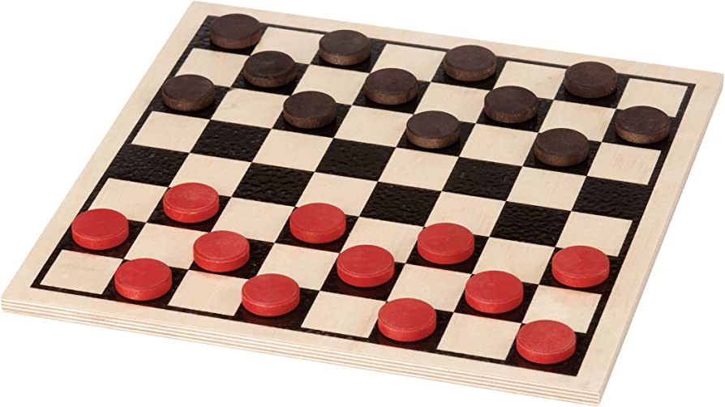
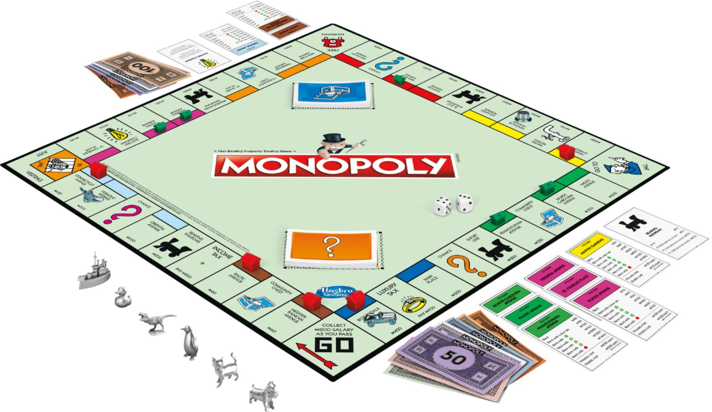

Chess is fun for the main reason that it invites strategic thinking and the games played are never the same. There are so many possible openings and combinations of the pieces to form on the board. As both players must constantly adapt to their opponent's moves and come up with new ways to outmaneuver them. There is also a certain artistic appeal to the pieces that people like me admire a lot.

While Checkers can be a very simple game, it can be argued that it's an amazing game that invites challenge and constant critical thinking in its calculations. Sometimes giving up one of your own pieces can leave the opponent in a worse situation. Some people also enjoy that it's a very simple game to pick up, yet very enjoyable nonetheless.
This classical board game is so enjoyable as there are so much strategy and even luck involved in its intricate gameplay design. Most players find themselves invested in the game when its gets closer to the end when all the deals are made and friendships are tested. Having full control with the properties you own, your own decisions can either help you win or go bankrupt.
